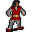

Delon¶| Stat | Value |
|---|---|
| Class | ? |
| HP | 0 |
| Max AP | 10 |
| Attack cost | 10 |
| Move cost | 10 |
| Damage | 0 |
| Attack chance | 0 |
| Block chance | 0 |
| Damage resistance | 0 |
| Critical skill | 0 |
| Critical multiplier | 0 |
Found on¶
Quests¶
- Bread and circus: stages 5, 10, 16, 20
Dialogue simulator¶
Set up your situation (quest stages, items, kills…), then talk to Delon. The simulator follows the game's own rules: it takes the same silent checks, offers only the options you'd really see, and applies their effects (quest stages, items handed over, rewards) as you go.
Rules verified against v0.8.18 game code (ConversationController.java) and dialogue data.
Dialogue (20 lines)
What the dialogue says, exactly as in the game files. Lines are listed once; links jump to the line a choice leads to.
brightport_delon_selector (silent check: the first matching branch below is taken)
- Next (if reached stage 20 of Bread and circus) → brightport_delon18
- Next (if reached stage 16 of Bread and circus; NOT reached stage 20 of Bread and circus) → brightport_delon14
- Next (if reached stage 162 of brightport_nondisplay (hidden flag); reached stage 163 of brightport_nondisplay (hidden flag); reached stage 164 of brightport_nondisplay (hidden flag)) → brightport_delon12
- Next (if reached stage 207 of brightport_nondisplay (hidden flag)) → brightport_delon11
- Next (if NOT reached stage 207 of brightport_nondisplay (hidden flag); reached stage 206 of brightport_nondisplay (hidden flag)) → brightport_delon10
- Next (if reached stage 195 of brightport_nondisplay (hidden flag); NOT reached stage 206 of brightport_nondisplay (hidden flag)) → brightport_delon9
- Next (if reached stage 5 of Bread and circus; NOT reached stage 195 of brightport_nondisplay (hidden flag)) → brightport_delon6
- Next → brightport_delon0
brightport_delon18 Delon: “Yawn... Your job's over, go away.”
brightport_delon14 Delon: “Yawn. Is the flour sifted yet?”
- “As white as powdered snow.” (if reached stage 168 of brightport_nondisplay (hidden flag)) → brightport_delon15
- “Not yet.” → conversation ends
brightport_delon12 Delon: “Zzzz. Pastries... Zzzz...”
- “Oh, so that's why you've been so quiet.” → brightport_delon13
brightport_delon11 Delon: “Mmm, yeah, sweep over there...”
brightport_delon10 Delon: “You did a good job sweeping that part of the warehouse. With my help, of course. Now finish the rest.”
brightport_delon9 Delon: “You have a broom, what are you doing here instead of sweeping?”
- “I'm on it.” → conversation ends
brightport_delon6 Delon: “Yes my underling, how is the sweeping going.”
- “I haven't even started.” → brightport_delon7
brightport_delon0 Delon: “What do you want? Can't you see I'm busy resti... I mean, working.”
- “What do you do here?” → brightport_delon1
- “Allares hired me for today, he told me to see you.” (if reached stage 1 of Bread and circus; NOT reached stage 5 of Bread and circus) → brightport_delon3
brightport_delon15 Delon: “Good work $playername. Now what should I have you do next...”
- Next → brightport_delon16
brightport_delon13 Delon: “Zzz... Huh? Er... Wha, what?”
- “I finally finished sweeping the whole warehouse!” → brightport_delon8
brightport_delon7 Delon: “Well, then go and do it.”
brightport_delon1 Delon: “Me? Well it might look like I'm just laying around in the warehouse, but I've got a secret, and I'm only gonna tell you this. One day I'll open my own bakery in Nor City, ten times better than here.”
- “There's no harm in dreaming” → brightport_delon2
brightport_delon3 Delon: “Allares, my assistant, he did well acquiring me an underling. Hmm... Now what work should I have you do?”
- “Huh aren't we working together?” → brightport_delon4
brightport_delon16 Delon: “Hmm, I think that was all of it. I would make you peel apples but I don't see any fresh apples from the orchard around, which is odd because they were supposed to be delivered already.”
- “Can you tell me more about it?” → brightport_delon17
brightport_delon8 Delon: “[Yawning] See that sack of flour over there? Go sift through it so there's no rat dung inside or anything.” — effects: sets stage 16 of Bread and circus
- “More work?” → conversation ends
brightport_delon2 Delon: “Like bread I rest, and great I rise.”
brightport_delon4 Delon: “What?! Of course not. I'm the supervisor, you're the worker. Now go sweep the floor so I can see what you're capable of.” — effects: sets stage 5 of Bread and circus
- “Fine. And what am I supposed to use to sweep the floor? Do you have a broom?” → brightport_delon5
brightport_delon17 Delon: “No I can't, that's not my job. Go ask Allares if you want to know more. Now, I'm glad you're finally getting off my back. I don't want you interrupting my important work.” — effects: sets stage 20 of Bread and circus
- “Sure, whatever you say sleepyhead.” → conversation ends
brightport_delon5 Delon: “Hmm. We might have had something like that, but I'm not sure. You can go and buy a new one.” — effects: sets stage 10 of Bread and circus
Version history¶
| Version | Change |
|---|---|
| v0.8.16.1 | Added Dialogue: 20 lines added |
| v0.8.18 | Dialogue: 1 line changed · text: “Hmm, I think that was all of it. I would make you peel apples but I d…” → “Hmm, I think that was all of it. I would make you peel apples but I d…” |
Verified against v0.8.18 and every earlier release back to v0.7.0 (game data compared release by release).
Community notes¶
Written by players, not generated from game data. Observations: what players notice in-game · Lore: the in-world story · Trivia: real-world facts, references, development history · Theory / speculation: unconfirmed ideas; may just be unfinished content
Observations¶
Nothing here yet. Know something? Add it.
Lore¶
Nothing here yet. Know something? Add it.
Trivia¶
Nothing here yet. Know something? Add it.
Theory / speculation¶
Nothing here yet. Know something? Add it.
Monster ID: brightportnpc10 · Data from v0.8.18